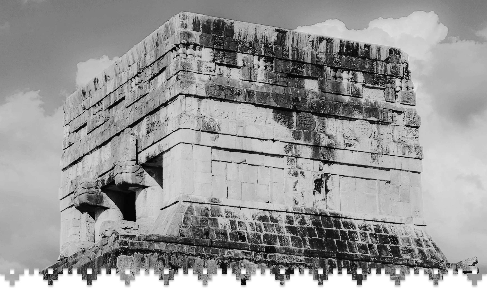
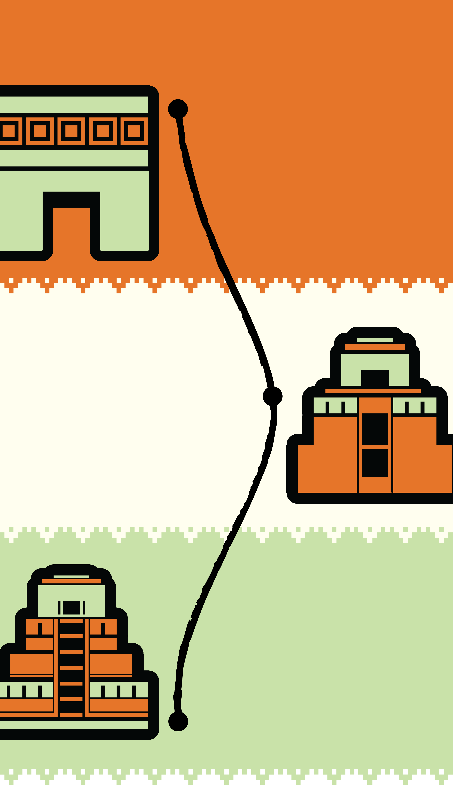

The reasons for Chichen Itza’s decline is still unknown, and as many theories surrounding it. Over time, the city became an expansion of the surrounding jungle. Every structure was covered with lush vines, and canopies. It was discovered in the 19th century by explorers and archaeologists.
As interest in the site grew, archaeologists and explorers started taking steps to protect Chichen Itza. The reconstruction process began in 1910 when a new stairway was built from the ground up. Earlier attempts tried to recycle old stones, but new ones were ultimately cut for the steps.
After many years, the reconstruction process of Chichen Itza was finished. The city got many new and fresh cut bricks, and is one of the worlds seven wonders. With many visitors every year, Chichen Itza has become a very famous and well known ancient city.
